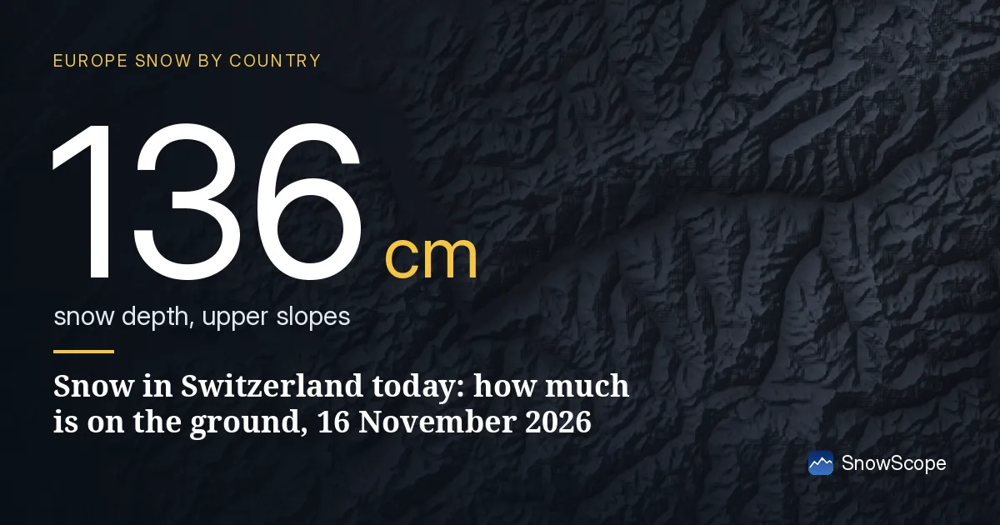

Up to 112 cm snow forecast for Switzerland in seven days
Major snowfall is forecast for Switzerland. Our model predicts 112 cm of fresh snow by November 24, with November 17 as the wettest day, delivering about 29 cm.
See the live snow forecast for Ovronnaz in the SnowScope appSnow depth, powder alerts and the 3D map, free.
What is coming
This is a significant event for the high mountains. The coming week will add huge amounts of fresh snow and fresh water to the mountains. Our snow model forecasts 69 cm of snow in the next three days, climbing to 112 cm by November 24. This matters for how full mountain reservoirs will be in spring, and for the streams and rivers that flow from these peaks.
| Resort | Today | Normal for the date | Share of normal |
|---|---|---|---|
| Ovronnaz | 24 cm | 18 cm | 133 % |
| Saint-Luc | 30 cm | 24 cm | 125 % |
| Crans-Montana | 4 cm | 18 cm | 22 % |
| Lauchernalp | 15 cm | 19 cm | 79 % |
| Aletsch Arena | 11 cm | 17 cm | 65 % |

Next week's daily picture
November 17 will be the heaviest day, with around 29 cm expected across the high terrain. By November 19, most of this batch will have fallen. The Valais Alps will catch the most water from this snow; the region already received 41 cm in the past three days, and more is on the way. The Bernese Oberland took 27 cm in the same period. After November 24, the system weakens sharply. Week two (November 24–30) shows only 29 cm maximum, suggesting drier weather will arrive.

Where snow falls deepest
Altitude is everything in early season snow forecasts. The 1400 m snow line marks today's boundary. Below it, snow is scarce or melting fast. Above 2500 m, coverage is complete and mean depths reach 18 cm—a solid early-season base. Ovronnaz, perched in the Valais with a top elevation of 2456 m, leads all 279 resorts with 136 cm depth measured today. It will gain another 71 cm by November 19. Saint-Luc and Crans-Montana will also gain heavily: 51 cm and 64 cm respectively. These numbers are model estimates for the resort areas, so actual depths vary with slope and wind.
Water already on the ground
In just 72 hours, 8,740 km² received at least 5 cm of fresh snow—a volume worth noting for water accounting. The Valais Alps saw 41 cm accumulate; the Bernese Oberland took 27 cm. Looking at the broader picture, snow cover jumped by 1,820 km² from yesterday to today alone. The mapped area went from 14,690 km² yesterday to 16,510 km² today. That is real growth, and it is spreading upward in altitude every 24 hours.
The expanding snowpack
The trend over a full week is striking. Seven days ago, only 13,810 km² of Switzerland was white. Today, 16,510 km². That represents 2,700 km² of new coverage in seven days. Ovronnaz continues to lead among all 279 resorts tracked, holding 136 cm. Snow is now present on 206 of those resorts—a jump from barely half the count a few days ago. The snowpack is building fast, and the altitude of that coverage is climbing daily.
Depth and coverage by height
Snow depth rises steeply with altitude, as expected. Between 1000 and 1500 m, only 22 percent of the zone is covered and mean depths are zero; rock is still dominant. At 1500–2000 m, coverage reaches 92 percent, but mean depth is just 3 cm—thin, and rocks are near the surface. At 2000–2500 m, 100 percent coverage and 7 cm depth. Above 2500 m, mean depth reaches 18 cm across the full 100 percent covered zone. That upper snow is the water storage that matters for April.
Tips for skiers
- Check the official avalanche bulletin before any off-piste travel, especially above 2000 m where fresh snow is accumulating rapidly and may be unstable.
- Early-season snow is thin below 1500 m; rocks are still exposed, so stay on marked terrain.
- Ovronnaz and other high Valais resorts will have the best conditions by November 19, so plan days ahead if booking is flexible.
- By November 23, more than 110 cm of new snow will reach the high zone—weeks of winter supply falling in just seven days.
- After November 24, drier weather is likely, so this window is the main snow event for the month.
About these numbers
Resort snow depths are the deepest snow on the resort's upper slopes from the SnowScope snow model (about 1 km, run of 16 November); they are estimates for an area, not a measurement at one point. Station values are measurements on the date shown. Forecasts can change. Always read the official avalanche bulletin before going off-piste.
Cite this report
For research, teaching or the press: the numbers and charts are free to reuse under CC BY 4.0 with this citation.
SnowScope (2026), Up to 112 cm snow forecast for Switzerland in seven days, https://snowscope.app/blog/en/2026/11/switzerland-snow-report-16-november-2026.html, accessed 2026-11-16
SnowScope (Atlas Labs). (2026, November 16). Up to 112 cm snow forecast for Switzerland in seven days. SnowScope snow reports. https://snowscope.app/blog/en/2026/11/switzerland-snow-report-16-november-2026.html
BibTeX
@misc{snowscope2026switzerlandsnowreport16n,
author = {{SnowScope (Atlas Labs)}},
title = {Up to 112 cm snow forecast for Switzerland in seven days},
year = {2026},
month = nov,
howpublished = {\url{https://snowscope.app/blog/en/2026/11/switzerland-snow-report-16-november-2026.html}},
note = {Published 2026-11-16 20:42 UTC; accessed 2026-11-16}
}· CC BY 4.0 · Methods, data and tools →
Ovronnaz: snow and temperature by height, this winter vs last (tools) →
Follow Ovronnaz
Free: a message when fresh snow is coming, and the forecast every morning.
More snow reports

Fresh snow fell unevenly across Swiss mountains. The Valais Alps received 92 cm in three days; the Bernese Oberland 54 cm. Data from 17 November.

Swiss ski areas are running 142% of normal snow cover for November 18. Glacier 3000 tops the ranking with 52 cm, ahead of major storms forecast.

Ukraine's snow cover fell from 5,090 km² to 1,650 km² in a week. As of November 16, high terrain above 1,500 m held 89% cover. Up to 25 cm snow forecast in the next 7 days.